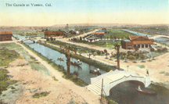
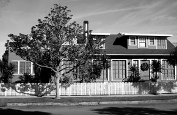

A Venice Victory
Nora and Michael Grizel, a couple looking for a new home, definitely wanted something special. As local craftsmen restoration enthusiasts, they were looking for a residence to refurbish and move into. Something with maybe a bit of history to it. And, boy, did they find one!
After an extensive search, the couple was fortunate enough to purchase an old house on 6th Avenue, in the Oakwood section of Venice. It had stood uninhabited for seven years, since the death of it's previous owner, Thelma Tabor-Brawley.
What was so amazing about this house, was that it once had belonged to both Abbot Kinney, Venice of America's founder, as his personal residence, and later on to Irving Tabor, Kinney's chauffeur, friend, and personal aide. Quite the Venice bloodline. And what a history the house held!
This Venice craftsman-style home linked to Kinney and Tabor has just been added to the list of Historic-Cultural Monuments in Los Angeles. The residence was approved by the Los Angeles City Council July 9th for inclusion onto the list of Historic-Cultural Monuments of Los Angeles.
The City Council approval came after the city's Cultural Heritage Commission found that the home met three of the historic-cultural monument criteria, including that it "embodies the distinguishing characteristics" of craftsman-style architecture.
The commission also found that the home reflects the "broad cultural, economic=2
0or social history" of Venice, and is "identified with historic personages," such as Abbot Kinney.
Originally, the structure was built as a crude bunkhouse for the construction workers building Venice of America. Kinney had imported many carpenters, and the property also served as a meeting place for the workers. Its location was One Grand Canal, situated on Lot 1, Block 9 of the Venice of America tract, dated 1905. Today, that's where the Venice Post Office Annex is located. The first form of this home was very crude and rudimentary, as befitting a bunkhouse.
A Los Angeles Times article, dated June 1908, stated that "Work was commenced today on the construction of a home for the Cosmos Club of Los Angeles. A bungalow will be built on Burbank Island." It seems rather odd to me that the paper said that the house was being built in 1908, when all the original paperwork notes that the structure was built in 1906. Then how could it have been a bunkhouse for workers in early 1905?
The home owners say that actually it makes sense, because it was probably built as a bunkhouse in 1905, and that as there were probably no permits taken out back then, therefore the structure didn't enter the LA City system until 1906, to then later be converted into a bungalow home or clubhouse, in 1908.
It is Venice historian Elayne Alexander's opinion that the home was built as a bunkhouse20in 1904, and that the structure was moved and incorporated into the Cosmos Club. The canals were built from 1904-1906, so that timeline seems feasible.

The Cosmos Club, a social club for the beachside community, was intended for "the advancement of its members in science, literature, and art." The national establishment was the birthplace of many kindred organizations, among them the National Geographic Society. Between 1911 and 1915, the Venice Cosmos Club clubhouse was also leased to various organizations including a men's group called The Owls, a grade school, and the Grammar School Board of Education offices.
Abbot Kinney's first wife Margaret died in 1911 and three years later, he remarried, this time to Winifred Harwell in 1914. And together they dreamed of a grand residence in the utmost location in all of Venice.
In 1916, ideally located between the two canals and fronting on the lagoon at One Grand Canal, and situated amid a bower of trees, flowers, and shrub, the former Cosmos Club was enlarged and remodeled into a villa-like dwelling of eight rooms for the permanent residence of the newly married Mr. and Mrs. Kinney.
The front room featuring the main entrance appeared to have originally been an oversized front porch, previously seen in Cosmos Club photos, now enclosed to be made a part of the inside of the front of the residence. The room at
the far left of the building was expanded, and a service porch with a shingle roof was added to the back.
The Kinney family lived a seemingly idyllic life along the canals through this time, until the untimely death of the Doge. Abbot Kinney, founder of Venice and author of scientific and philosophical books, passed away on November 4, 1920, with his family by his side, at home on Cosmos Island. Kinney's wife, Winifred, continued to live at the home subsequently until she died in 1927, when the property was bequeathed to the Kinneys' friend and assistant, Irving Tabor.
The Tabor family, including Irving's brothers, Charles and Joseph and their respective families, had moved to California in 1910 from Louisiana at the request of their cousin, Arthur Reese. It was a prime opportunity to provide a labor force for the city of Venice. Irving worked for Arthur sweeping the Venice pier, where he ultimately met Abbot Kinney and soon thereafter became his personal chauffeur, dear friend, and aide to the Kinney family. Irving Tabor had become a second son to the Doge, and eventually even tried moving into the Kinney home on Grand Canal.
However, Kinney's egalitarianism apparently wasn't shared by the rest of the white citizens of Venice, for only whites back then were allowed to live on the banks of the canals. So Tabor was forced to move the house and its garage to the Oakwood area. On June2018, 1926 he was granted permission to immediately move the house and garage from the original site on an acre of land at One Grand Canal to 1310 Sixth Avenue, between Santa Clara and California.
All of the Tabor brothers pooled their talents, resources, and knowledge to move the house. It was a matter of pride. First, they built graduated ramps on each side of the hump-backed bridge across Grand Canal at Riviera Avenue. Then they cut the house into three pieces and hauled it, with the help of Charles Tabor's trucks, to the site where it stands today.
The gracious interior had been preserved virtually as the Kinney's left it, with walls paneled in burnished leather, great rustic fireplaces, redwood columns, opening the living room to the entry hall, and a staircase screened by spindle work. It became one of the finest residences in the historic Negro section of Venice.
Irving Tabor did the place proud, living there for 61 years, from 1926 until 1987. A high point came in March 1979 when Los Angeles Mayor Tom Bradley and Councilwoman Pat Russell arrived at the house and presented Tabor with a plaque honoring him for his service to the Venice community and his role in the history of Venice, and for his service as personal aide to Abbot Kinney. They noted the home was considered an architectural and historical landmark that Tabor had helped to preserve for future generations to come.
0A
In an article titled "Death of Venice Historian Closes Curtain On Era," the Los Angeles Times stated that "Irving Burns Tabor's death on January 9, 1987, at the age of 93, closed the curtain on the early Venice era and robbed the city of its best-known oral historian. " The direct link to the original foundation of this great city had succumbed. A piece of history was lost.
Irving's daughter Thelma Tabor-Brawley then acquired the home from her father after his death, and lived there until her death on November 19, 1995. And that's when the house began to just sit there, empty, for seven years. Getting more decrepit with each passing day. Enter Nora and Michael in 2003. Their purchase of the property that Halloween from Thelma Brawley's step daughter, Beth Watkins, ultimately saved this house from extinction.

To their credit, two years were spent first rebuilding the bones of the home, and then two more making painstaking efforts to bring the house back to its original state as much as possible. This was their intent and their goal. The interior was restored to its original condition, after a 1970s coating of white paint almost obliterated all the original craftsman charm. Today, entering the house, one is transported back in time, to another era of grace, beauty and splendor.
Notable elements revived include fur wood beams=2
0and molding, redwood columns and stairway spindles, full hide leather walls in the main stateroom, original refurbished craftsman wrought iron lighting fixtures, and Italian artisan-tiled fireplaces. Each fireplace front contains a tile including the Kinney crest, designed by Abbot Kinney, featuring the Latin term "Semper Paratus," which translates as "Always Prepared." The Tabor name in steel letters can be found embedded in cement in front of the driveway of the house.
In early January 2008, the couple sent their application for historic monument status in to the city's Cultural Heritage Commission. They were then notified that their presentation for possible consideration would take place on Thursday, February 21. And so they came prepared for bear, with historic photos, deeds, tract maps, fire insurance maps, census reports, passports, moving permits, newspaper article, copies of the city planning brochure, letters of recommendation, and the actual Los Angeles City Recommendation plaque awarded to Mr. Tabor.
It was all presented in a 64-slide powerpoint presentation which featured over 45 unique photos of the historic home. (Full disclosure: I helped put together that powerpoint presentation.) The allotted 15 minutes was initially cut back to just 8 minutes for their showing, but the commission members were so intrigued, that they gave them 3 more minutes of time. At that time, the Cultural Heritage Commission voted
to take the application under consideration.
The next step was a visit to the home by the Cultural Commission on April 3rd. The tour went very well, with a lot of compliments provided on the restoration of the home.
On July 1st, the Planning and Land Use Management Committee considered and recommended that the City Council approve the report, recommendations, and findings of the Cultural Heritage Commission relative to the inclusion of the Kinney-Tabor House.
Finally, on July 9th, the City Council voted "yes" unanimously in favor of the following Cultural Heritage Commission report recommendations:
1) To adopt the findings of the CHC as the Findings of the Council, and
2) To approve the recommendation of the CHC relative to the inclusion of the Kinney-Tabor House in the list of Historic-Cultural Monuments .
With this approval, Venice has much to celebrate as the house not only represents the rise, fall, and rise again of the city, but also the friendship and bond that reached beyond the boundaries and prejudices of the times. The special bond between Venice's well-known founder, and one of its key African American members, whose family was a crucial part of the building of Venice of America, has finally and officially been acknowledged and celebrated.
Now, if they'd only finish the restoration of their chimney! Which actually was achieved in the fall of 2008. What a great accomplishment, that every Venetian should be proud of!
|